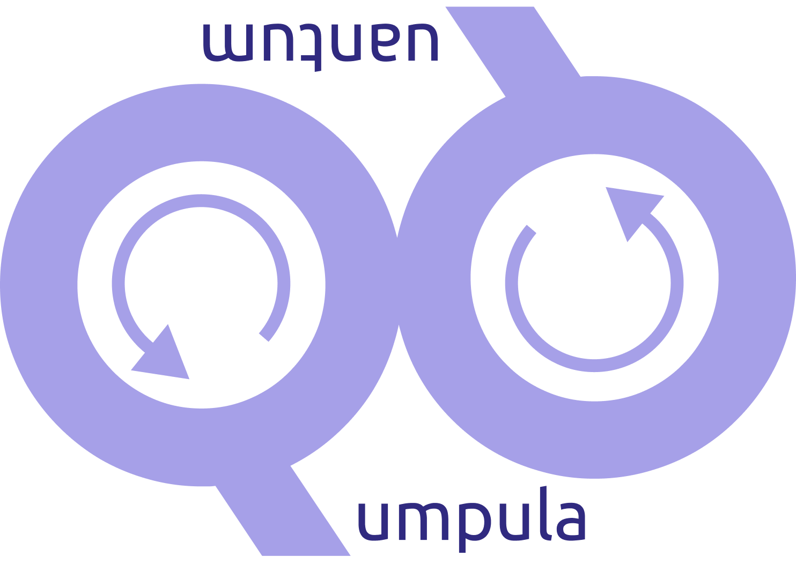
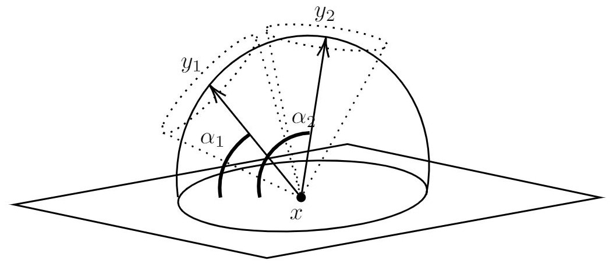

New Angles from Right Range:
Optimizing Car Sensor Positioning
with D-Wave Hybrid Quantum Computers
Valter Uotila & Sardana Ivanova
30.11.2021
Sensor positions optimization problem
Position $n$ sensors onto a car's surface so that
- the environment is covered as well as possible,
- the sensors do not overlap more than necessary and
- the total price of the sensors is minimized.
Our approach
Quantum annealing
Metaheuristic and quantum computing paradigm to find solutions to discrete and combinatorically difficult minimization problems.
Quadratic Unconstrained Binary Optimization (QUBO) model
Shortly, we created an objective function which consists of linear and quadratic terms, their weights and a constant term.
Binary variables
In our model, binary variables are
where point $(x_1, x_2, x_3)$ is on the surface of a car, point $(y_1, y_2, y_3)$ is in the environment and id $i$ refers to a sensor.
Example of car

Initializing the binary variables requires sampling points from the car's surface.
Example of sensors
Initializing the binary variables requires sampling points from the environment.
Constraints
- Constraint 1: selecting sufficiently many sensors to cover the environment
- Constraint 2: optimizing overlap of the sensor views
- Constraint 3: minimizing the total price
Constraints are translated into objective functions and summed together.
Implementation
Implemented with D-wave's Ocean software and computed on D-wave's hybrid quantum computer.
Implementation is available in Github as Jupyter notebook .
Example result
energy num_oc.
0.000002 1
['BINARY', 1 rows, 1 samples, 2412 variables]
Possible sensor positions in the space
(point on car, point in environment, sensor id):
((-3620, 650, 1600.0), (-8133, -6081, -3860), 5) 1
((-3422, -1000, 500), (-2916, -2733, 536), 1) 1
((-2820, 650, 1600.0), (-5278, -2218, 4876), 2) 1
((-2820, 650, 1600.0), (-1793, -3936, 265), 2) 1
((-2422, 1000, 500), (-4954, 1000, 317), 2) 1
((-2422, 1000, 500), (-3688, -3331, 408), 2) 1
((-400, 0, 1057.0), (-1033, 3484, -7601), 5) 1
7
Scalability
- D-wave's hybrid quantum annealer seems to be scaling and performing surprisingly well
- The actual bottleneck in this case is constructing objective function on our local machine
- Google studied that quantum annealing outperforms simulated annealing
Performance: computation consists of three parts
| Number of variables | Time on laptop | Hybrid time in cloud | Quantum computing time |
|---|---|---|---|
| 2412 | 5min 6s | 6.145s | 0.036s |
| 4956 | 18min 11s | 14.288s | 0.036s |
The total running time was dominated by the running time on the local machine.
Conclusion & unique selling points
- We developed geometric framework, formulated the problem as a discrete minimization problem and used the real-life data BMW provided
- Hybrid quantum computers scale and perform sufficiently well in real-life applications
- Current results are pointing to the correct direction
Future work
Developing the implementation
- These results are not yet useful or realistic
- Estimating intersections of sensors' field of views is difficult
- Criticality of regions of interests is not included
Future work
- Providing better evaluation metrics
- Comparison to simulated annealing and other state-of-the-art methods
- Better visualizations for solution sets